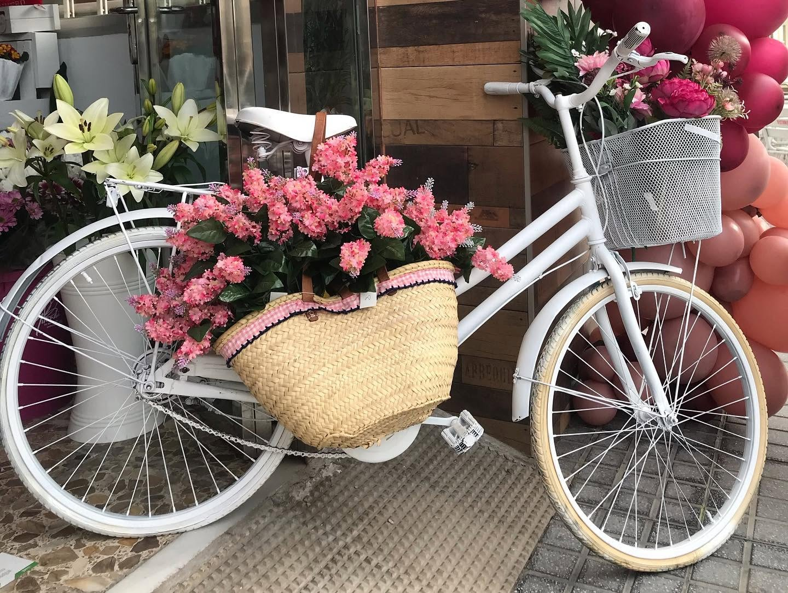
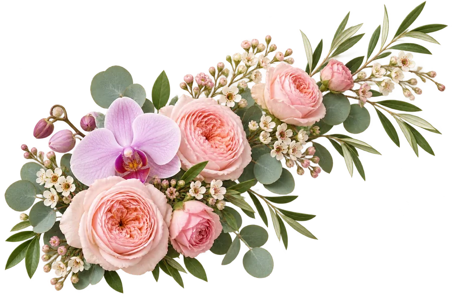
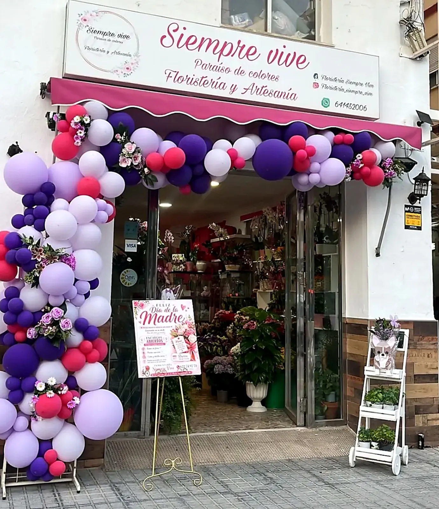

Un lugar para las emociones
Nacida del amor por la naturaleza y del poder de las flores para expresar emociones, Siempre Vive ha hecho del color y la artesanía su manera de acompañar momentos importantes.
Floristería y artesanía en el corazón de Vélez-Málaga. Un lugar para encontrar flores, plantas y una manera personal de acompañar cada ocasión.

Detalle real · Siempre ViveSiempre Vive nació del amor por la naturaleza y de la idea de que una flor puede transformar un momento. En Vélez-Málaga une floristería y artesanía para acompañar cumpleaños, aniversarios, bodas y también esos días en que apetece alegrar a alguien sin esperar una fecha señalada.
La fachada, la bicicleta floral y el color cuentan algo que ninguna imagen de catálogo puede contar: aquí hay un lugar real, en Av. Vivar Téllez, 53, donde comienzan las ideas para regalar y celebrar.
En su web se mencionan ramos de novia, arreglos personalizados y decoración floral para bodas, actos sociales y eventos corporativos. También aparecen rosas, lirios, tulipanes, orquídeas, girasoles, claveles y margaritas. Para saber qué hay hoy o qué se puede preparar en una fecha concreta, lo mejor es escribir a la tienda.
Visítanos o escríbenos
Un pequeño paraíso de colores en Vélez-Málaga.

La selección de flores cambia con el momento; estos son los servicios y formatos que Siempre Vive presenta o inspira en su web y en las imágenes compartidas.
De un agradecimiento sencillo a una composición con colores y estilo elegidos para una persona concreta.
Descubrir ramos ↗02 / La celebraciónFlores pensadas para acompañar el ambiente, el espacio y la historia de una celebración.
Ver bodas ↗03 / El espacioCentros y decoración floral a estudiar según el lugar, el número de piezas y la fecha.
Planear un evento ↗04 / El detalleRamos, plantas y piezas decorativas que pueden inspirar un pack personal. Consulta siempre la combinación disponible.
Explorar regalos ↗Flores y artesanía para momentos cotidianos y celebraciones. Cada idea merece una conversación propia.
Nacida del amor por la naturaleza y del poder de las flores para expresar emociones, Siempre Vive ha hecho del color y la artesanía su manera de acompañar momentos importantes.
Un ramo puede empezar por un color; una boda, por el ambiente que imaginas. Comparte referencias y descubre qué se puede preparar con las flores disponibles.
Disponibilidad, estilo, tamaño, presupuesto y fecha son los detalles que conviene acordar directamente con la floristería antes de confirmar un trabajo.
Pregunta qué flores son más adecuadas para tu ocasión y cómo conservarlas. En esta web encontrarás guías de cuidado contrastadas con fuentes botánicas.
La web de la floristería destaca la creatividad y la atención personal de sus floristas. Una conversación sobre la persona, la ocasión y el estilo ayuda a convertir una idea en un encargo propio.
Escríbenos directamente. El horario y la disponibilidad se confirman con la tienda.